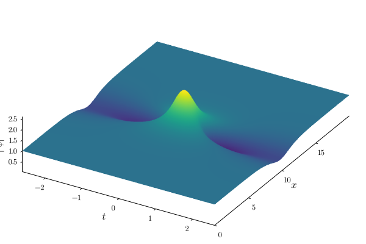
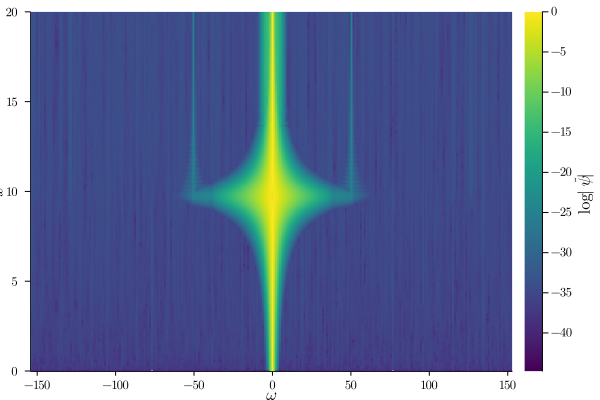
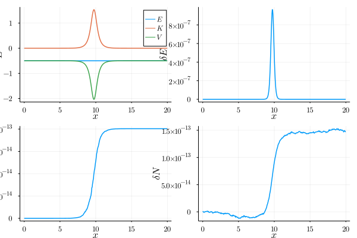
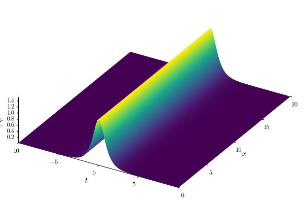
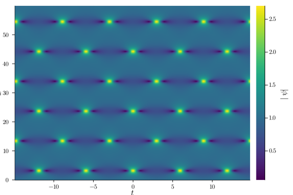
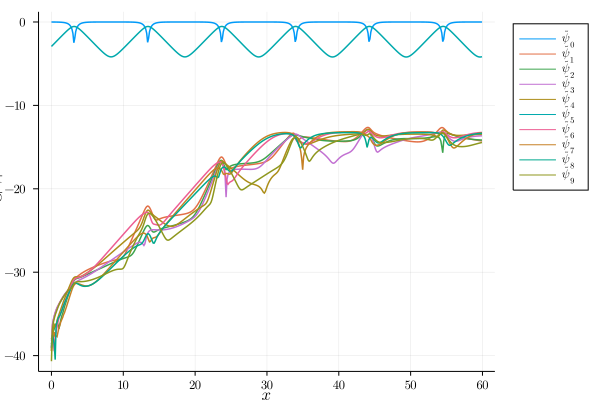
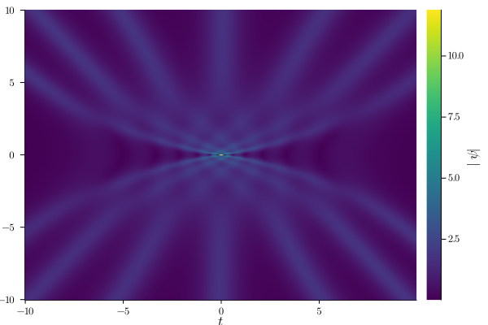
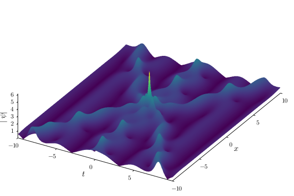
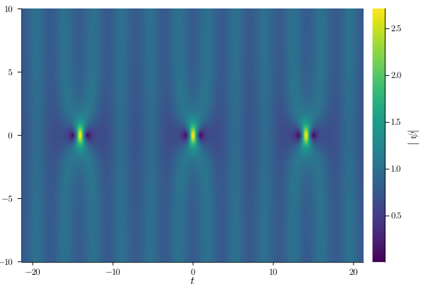
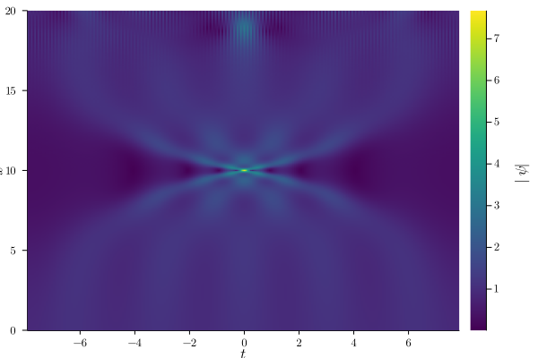

Examples
Example 1: Cosine Wave Initial Condition
λ, T, Ω = params(λ = 0.8im)
xᵣ = 0=>20
box = Box(xᵣ, T, dx=5e-3, Nₜ = 256, n_periods = 1)
coeff = [1e-4]
ψ₀, A₀ = ψ₀_periodic(coeff, box, Ω)
sim = Sim(λ, box, ψ₀, T4A_TJ!)
solve!(sim)
compute_IoM!(sim)
surface(sim)
heatmap(sim, :ψ̃)
plot(sim, :IoM)[ Info: Passed λ=0.0 + 0.8im, computed T = 5.23598775598299 and Ω = 1.1999999999999997 [ Info: Initializing Box with 1 period(s) and dx = 0.005, Nₜ = 256. [ Info: Longitudinal range is [0, 20], transverse range is [-2.617993877991495, 2.617993877991495) [ Info: Done computing t, x, ω [ Info: Initializing periodic ψ₀ [ Info: Computing A₀ to preserve normalization. [ Info: Computed A₀ = 0.99999999 [ Info: ψ₀ = 0.99999999 + 2 × 0.0001 × cos(1 × 1.1999999999999997 t) [ Info: Passed λ=0.0 + 0.8im, computed T = 5.23598775598299 and Ω = 1.1999999999999997 [ Info: Generating FFT plans [ Info: Starting evolution [ Info: Computing Spectrum [ Info: Computation Done! [ Info: Computing integrals of motions [ Info: Integrals of motion computed. /home/runner/.julia/packages/GR/RlE5Y/src/../deps/gr/bin/gksqt: error while loading shared libraries: libQt5Widgets.so.5: cannot open shared object file: No such file or directory connect: Connection refused GKS: can't connect to GKS socket application GKS: Open failed in routine OPEN_WS GKS: GKS not in proper state. GKS must be either in the state WSOP or WSAC in routine ACTIVATE_WS /home/runner/.julia/packages/GR/RlE5Y/src/../deps/gr/bin/gksqt: error while loading shared libraries: libQt5Widgets.so.5: cannot open shared object file: No such file or directory connect: Connection refused GKS: can't connect to GKS socket application GKS: Open failed in routine OPEN_WS GKS: GKS not in proper state. GKS must be either in the state WSOP or WSAC in routine ACTIVATE_WS /home/runner/.julia/packages/GR/RlE5Y/src/../deps/gr/bin/gksqt: error while loading shared libraries: libQt5Widgets.so.5: cannot open shared object file: No such file or directory connect: Connection refused GKS: can't connect to GKS socket application GKS: Open failed in routine OPEN_WS GKS: GKS not in proper state. GKS must be either in the state WSOP or WSAC in routine ACTIVATE_WS
  
Example 2: Soliton Initial Condition
λ = 0.75im
T = 20
xᵣ = 0=>20
box = Box(xᵣ, T, dx=1e-2, Nₜ = 256, n_periods = 1)
ψ₀ = Array{Complex{Float64}}(undef, box.Nₜ)
ψ₀ .= 2*imag(λ)./cosh.(2*imag(λ).*box.t)
sim = Sim(λ, box, ψ₀, T4A_TJ!)
solve!(sim)
surface(sim)[ Info: Initializing Box with 1 period(s) and dx = 0.01, Nₜ = 256. [ Info: Longitudinal range is [0, 20], transverse range is [-10.0, 10.0) [ Info: Done computing t, x, ω [ Info: Passed λ=0.0 + 0.75im, computed T = 4.749641646894903 and Ω = 1.3228756555322954 [ Info: Generating FFT plans [ Info: Starting evolution [ Info: Computing Spectrum [ Info: Computation Done! /home/runner/.julia/packages/GR/RlE5Y/src/../deps/gr/bin/gksqt: error while loading shared libraries: libQt5Widgets.so.5: cannot open shared object file: No such file or directory connect: Connection refused GKS: can't connect to GKS socket application GKS: Open failed in routine OPEN_WS GKS: GKS not in proper state. GKS must be either in the state WSOP or WSAC in routine ACTIVATE_WS

Exampole 3: Nonlinear Talbot Carpet (Pruning)
λ, T, Ω = params(a = 0.36)
xᵣ = 0=>60
box = Box(xᵣ, T, dx=1e-2, Nₜ = 512, n_periods = 5)
coeff = [(2.7 + 4.6im)*1e-2]
ψ₀, A₀ = ψ₀_periodic(coeff, box, Ω)
sim = Sim(λ, box, ψ₀, T4A_TJ!, β=10.0)
solve!(sim)
heatmap(sim)
plot(sim, :ψ̃)[ Info: Passed a = 0.36, computed λ = 0.0 + 0.848528137423857im, T = 5.937052058618629 and Ω = 1.0583005244258363 [ Info: Initializing Box with 5 period(s) and dx = 0.01, Nₜ = 512. [ Info: Longitudinal range is [0, 60], transverse range is [-14.842630146546572, 14.842630146546572) [ Info: Done computing t, x, ω [ Info: Initializing periodic ψ₀ [ Info: Computing A₀ to preserve normalization. [ Info: Computed A₀ = 0.9971509414326399 [ Info: ψ₀ = 0.9971509414326399 + 2 × 0.027000000000000003 + 0.046im × cos(1 × 1.0583005244258363 t) [ Info: Passed λ=0.0 + 0.848528137423857im, computed T = 5.937052058618629 and Ω = 1.0583005244258363 [ Info: Generating FFT plans [ Info: Starting evolution [ Info: Computing Spectrum [ Info: Computation Done! /home/runner/.julia/packages/GR/RlE5Y/src/../deps/gr/bin/gksqt: error while loading shared libraries: libQt5Widgets.so.5: cannot open shared object file: No such file or directory connect: Connection refused GKS: can't connect to GKS socket application GKS: Open failed in routine OPEN_WS GKS: GKS not in proper state. GKS must be either in the state WSOP or WSAC in routine ACTIVATE_WS /home/runner/.julia/packages/GR/RlE5Y/src/../deps/gr/bin/gksqt: error while loading shared libraries: libQt5Widgets.so.5: cannot open shared object file: No such file or directory connect: Connection refused GKS: can't connect to GKS socket application GKS: Open failed in routine OPEN_WS GKS: GKS not in proper state. GKS must be either in the state WSOP or WSAC in routine ACTIVATE_WS
 
Example 4: 7 Soliton Collision
xᵣ = -10=>10
T = 20
seed = "0"
box = Box(xᵣ, T, Nₓ=500, Nₜ = 500)
λ = [-0.45 + 0.775im, -0.35 + 0.8im, -0.25 + 0.825im, 0.85im, 0.25 + 0.875im, 0.35 + 0.9im, 0.45 + 0.925im]
xₛ = [0.0, 0.0, 0.0, 0.0, 0.0, 0.0, 0.0]
tₛ = [0.0, 0.0, 0.0, 0.0, 0.0, 0.0, 0.0]
calc = Calc(λ, tₛ, xₛ, seed, box)
solve!(calc)
heatmap(calc)[ Info: Initializing Box with 1 period(s) and dx = 0.0, Nₜ = 500. [ Info: Longitudinal range is [-10, 10], transverse range is [-10.0, 10.0) [ Info: Done computing t, x, ω [ Info: Calculating Lax pair generating functions rₙₚ(x,t) and sₙₚ(x,t) for (n,p) = (7,1) [ Info: Calculating Lax pair generating functions rₙₚ(x,t) and sₙₚ(x,t) for (n,p) = (6,1) [ Info: Calculating Lax pair generating functions rₙₚ(x,t) and sₙₚ(x,t) for (n,p) = (5,1) [ Info: Calculating Lax pair generating functions rₙₚ(x,t) and sₙₚ(x,t) for (n,p) = (4,1) [ Info: Calculating Lax pair generating functions rₙₚ(x,t) and sₙₚ(x,t) for (n,p) = (3,1) [ Info: Calculating Lax pair generating functions rₙₚ(x,t) and sₙₚ(x,t) for (n,p) = (2,1) [ Info: Calculating Lax pair generating functions rₙₚ(x,t) and sₙₚ(x,t) for (n,p) = (1,1) [ Info: Calculating Lax pair generating functions rₙₚ(x,t) and sₙₚ(x,t) for (n,p) = (1,2) [ Info: Calculating Lax pair generating functions rₙₚ(x,t) and sₙₚ(x,t) for (n,p) = (2,2) [ Info: Calculating Lax pair generating functions rₙₚ(x,t) and sₙₚ(x,t) for (n,p) = (1,3) [ Info: Calculating Lax pair generating functions rₙₚ(x,t) and sₙₚ(x,t) for (n,p) = (3,2) [ Info: Calculating Lax pair generating functions rₙₚ(x,t) and sₙₚ(x,t) for (n,p) = (2,3) [ Info: Calculating Lax pair generating functions rₙₚ(x,t) and sₙₚ(x,t) for (n,p) = (1,4) [ Info: Calculating Lax pair generating functions rₙₚ(x,t) and sₙₚ(x,t) for (n,p) = (4,2) [ Info: Calculating Lax pair generating functions rₙₚ(x,t) and sₙₚ(x,t) for (n,p) = (3,3) [ Info: Calculating Lax pair generating functions rₙₚ(x,t) and sₙₚ(x,t) for (n,p) = (2,4) [ Info: Calculating Lax pair generating functions rₙₚ(x,t) and sₙₚ(x,t) for (n,p) = (1,5) [ Info: Calculating Lax pair generating functions rₙₚ(x,t) and sₙₚ(x,t) for (n,p) = (5,2) [ Info: Calculating Lax pair generating functions rₙₚ(x,t) and sₙₚ(x,t) for (n,p) = (4,3) [ Info: Calculating Lax pair generating functions rₙₚ(x,t) and sₙₚ(x,t) for (n,p) = (3,4) [ Info: Calculating Lax pair generating functions rₙₚ(x,t) and sₙₚ(x,t) for (n,p) = (2,5) [ Info: Calculating Lax pair generating functions rₙₚ(x,t) and sₙₚ(x,t) for (n,p) = (1,6) [ Info: Calculating Lax pair generating functions rₙₚ(x,t) and sₙₚ(x,t) for (n,p) = (6,2) [ Info: Calculating Lax pair generating functions rₙₚ(x,t) and sₙₚ(x,t) for (n,p) = (5,3) [ Info: Calculating Lax pair generating functions rₙₚ(x,t) and sₙₚ(x,t) for (n,p) = (4,4) [ Info: Calculating Lax pair generating functions rₙₚ(x,t) and sₙₚ(x,t) for (n,p) = (3,5) [ Info: Calculating Lax pair generating functions rₙₚ(x,t) and sₙₚ(x,t) for (n,p) = (2,6) [ Info: Calculating Lax pair generating functions rₙₚ(x,t) and sₙₚ(x,t) for (n,p) = (1,7) /home/runner/.julia/packages/GR/RlE5Y/src/../deps/gr/bin/gksqt: error while loading shared libraries: libQt5Widgets.so.5: cannot open shared object file: No such file or directory connect: Connection refused GKS: can't connect to GKS socket application GKS: Open failed in routine OPEN_WS GKS: GKS not in proper state. GKS must be either in the state WSOP or WSAC in routine ACTIVATE_WS

Example 5: Fifth Order Maximal Intensity Breather
xᵣ = -10=>10
λ₁ = 0.98im
λ, T, Ω = params(λ = λ₁)
box = Box(xᵣ, T, Nₓ=500, Nₜ = 500, n_periods = 3)
λ = λ_maximal(λ₁, 5) # array of 5 eigenvalues
xₛ = [0.0, 0.0, 0.0, 0.0, 0.0]
tₛ = [0.0, 0.0, 0.0, 0.0, 0.0]
seed = "exp"
calc = Calc(λ, tₛ, xₛ, seed, box)
solve!(calc)
surface(calc)[ Info: Passed λ=0.0 + 0.98im, computed T = 15.787097084991364 and Ω = 0.3979949748426484 [ Info: Initializing Box with 3 period(s) and dx = 0.0, Nₜ = 500. [ Info: Longitudinal range is [-10, 10], transverse range is [-23.680645627487046, 23.680645627487046) [ Info: Done computing t, x, ω [ Info: Calculating Lax pair generating functions rₙₚ(x,t) and sₙₚ(x,t) for (n,p) = (5,1) [ Info: Calculating Lax pair generating functions rₙₚ(x,t) and sₙₚ(x,t) for (n,p) = (4,1) [ Info: Calculating Lax pair generating functions rₙₚ(x,t) and sₙₚ(x,t) for (n,p) = (3,1) [ Info: Calculating Lax pair generating functions rₙₚ(x,t) and sₙₚ(x,t) for (n,p) = (2,1) [ Info: Calculating Lax pair generating functions rₙₚ(x,t) and sₙₚ(x,t) for (n,p) = (1,1) [ Info: Calculating Lax pair generating functions rₙₚ(x,t) and sₙₚ(x,t) for (n,p) = (1,2) [ Info: Calculating Lax pair generating functions rₙₚ(x,t) and sₙₚ(x,t) for (n,p) = (2,2) [ Info: Calculating Lax pair generating functions rₙₚ(x,t) and sₙₚ(x,t) for (n,p) = (1,3) [ Info: Calculating Lax pair generating functions rₙₚ(x,t) and sₙₚ(x,t) for (n,p) = (3,2) [ Info: Calculating Lax pair generating functions rₙₚ(x,t) and sₙₚ(x,t) for (n,p) = (2,3) [ Info: Calculating Lax pair generating functions rₙₚ(x,t) and sₙₚ(x,t) for (n,p) = (1,4) [ Info: Calculating Lax pair generating functions rₙₚ(x,t) and sₙₚ(x,t) for (n,p) = (4,2) [ Info: Calculating Lax pair generating functions rₙₚ(x,t) and sₙₚ(x,t) for (n,p) = (3,3) [ Info: Calculating Lax pair generating functions rₙₚ(x,t) and sₙₚ(x,t) for (n,p) = (2,4) [ Info: Calculating Lax pair generating functions rₙₚ(x,t) and sₙₚ(x,t) for (n,p) = (1,5) /home/runner/.julia/packages/GR/RlE5Y/src/../deps/gr/bin/gksqt: error while loading shared libraries: libQt5Widgets.so.5: cannot open shared object file: No such file or directory connect: Connection refused GKS: can't connect to GKS socket application GKS: Open failed in routine OPEN_WS GKS: GKS not in proper state. GKS must be either in the state WSOP or WSAC in routine ACTIVATE_WS

Example 6: 3 Soliton Collision on a $cn$ background
xᵣ = -10=>10
T = 20
box = Box(xᵣ, T, Nₓ=500, Nₜ = 500, n_periods = 1)
λ = [-0.3+0.85im, 0.9im, 0.3+0.95im]
xₛ = [0.0, 0.0, 0.0]
tₛ = [0.0, 0.0, 0.0]
seed = "cn"
calc = Calc(λ, tₛ, xₛ, seed, box, m = 0.5)
solve!(calc)
surface(calc)[ Info: Initializing Box with 1 period(s) and dx = 0.0, Nₜ = 500. [ Info: Longitudinal range is [-10, 10], transverse range is [-10.0, 10.0) [ Info: Done computing t, x, ω [ Info: Calculating Lax pair generating functions rₙₚ(x,t) and sₙₚ(x,t) for (n,p) = (3,1) [ Info: Calculating Lax pair generating functions rₙₚ(x,t) and sₙₚ(x,t) for (n,p) = (2,1) [ Info: Calculating Lax pair generating functions rₙₚ(x,t) and sₙₚ(x,t) for (n,p) = (1,1) [ Info: Calculating Lax pair generating functions rₙₚ(x,t) and sₙₚ(x,t) for (n,p) = (1,2) [ Info: Calculating Lax pair generating functions rₙₚ(x,t) and sₙₚ(x,t) for (n,p) = (2,2) [ Info: Calculating Lax pair generating functions rₙₚ(x,t) and sₙₚ(x,t) for (n,p) = (1,3) /home/runner/.julia/packages/GR/RlE5Y/src/../deps/gr/bin/gksqt: error while loading shared libraries: libQt5Widgets.so.5: cannot open shared object file: No such file or directory connect: Connection refused GKS: can't connect to GKS socket application GKS: Open failed in routine OPEN_WS GKS: GKS not in proper state. GKS must be either in the state WSOP or WSAC in routine ACTIVATE_WS

Example 7: First Order Breather mMtched to a $dn$ Background
xᵣ = -10=>10
m = 2/5
λ = λ_given_m(m, q=4)
λ, T, Ω = params(λ = λ, m=m)
box = Box(xᵣ, T, Nₓ=500, Nₜ = 500, n_periods = 3)
λ = λ_maximal(λ, 1, m=m)
xₛ = [0.0]
tₛ = [0.0]
seed = "dn"
calc = Calc(λ, tₛ, xₛ, seed, box, m=m)
solve!(calc)
heatmap(calc)[ Info: Passed λ=0.0 + 0.8588568879615993im, computed T = 14.220154971930045 and Ω = 0.4418506914715286 [ Info: Initializing Box with 3 period(s) and dx = 0.0, Nₜ = 500. [ Info: Longitudinal range is [-10, 10], transverse range is [-21.330232457895068, 21.330232457895068) [ Info: Done computing t, x, ω [ Info: Calculating Lax pair generating functions rₙₚ(x,t) and sₙₚ(x,t) for (n,p) = (1,1) /home/runner/.julia/packages/GR/RlE5Y/src/../deps/gr/bin/gksqt: error while loading shared libraries: libQt5Widgets.so.5: cannot open shared object file: No such file or directory connect: Connection refused GKS: can't connect to GKS socket application GKS: Open failed in routine OPEN_WS GKS: GKS not in proper state. GKS must be either in the state WSOP or WSAC in routine ACTIVATE_WS

Example 8: Darboux Transformation Initial Condition
λ₁ = 0.98im
λ, T, Ω = params(λ = λ₁)
xᵣ = 0=>20
box = Box(xᵣ, T, dx=5e-3, Nₜ = 512, n_periods = 1)
λ = λ_maximal(λ₁, 5) # array of 5 eigenvalues
xₛ = [0.0, 0.0, 0.0, 0.0, 0.0]
tₛ = [0.0, 0.0, 0.0, 0.0, 0.0]
ψ₀ = ψ₀_DT(λ, tₛ, xₛ, -10, box)
sim = Sim(λ₁, box, ψ₀, T4A_TJ!)
solve!(sim)
compute_IoM!(sim)
heatmap(sim)[ Info: Passed λ=0.0 + 0.98im, computed T = 15.787097084991364 and Ω = 0.3979949748426484 [ Info: Initializing Box with 1 period(s) and dx = 0.005, Nₜ = 512. [ Info: Longitudinal range is [0, 20], transverse range is [-7.893548542495682, 7.893548542495682) [ Info: Done computing t, x, ω [ Info: Initializing Box with 1 period(s) and dx = 0.0, Nₜ = 512. [ Info: Longitudinal range is [-10, -9.99999], transverse range is [-7.893548542495682, 7.893548542495682) [ Info: Done computing t, x, ω [ Info: Calculating Lax pair generating functions rₙₚ(x,t) and sₙₚ(x,t) for (n,p) = (5,1) [ Info: Calculating Lax pair generating functions rₙₚ(x,t) and sₙₚ(x,t) for (n,p) = (4,1) [ Info: Calculating Lax pair generating functions rₙₚ(x,t) and sₙₚ(x,t) for (n,p) = (3,1) [ Info: Calculating Lax pair generating functions rₙₚ(x,t) and sₙₚ(x,t) for (n,p) = (2,1) [ Info: Calculating Lax pair generating functions rₙₚ(x,t) and sₙₚ(x,t) for (n,p) = (1,1) [ Info: Calculating Lax pair generating functions rₙₚ(x,t) and sₙₚ(x,t) for (n,p) = (1,2) [ Info: Calculating Lax pair generating functions rₙₚ(x,t) and sₙₚ(x,t) for (n,p) = (2,2) [ Info: Calculating Lax pair generating functions rₙₚ(x,t) and sₙₚ(x,t) for (n,p) = (1,3) [ Info: Calculating Lax pair generating functions rₙₚ(x,t) and sₙₚ(x,t) for (n,p) = (3,2) [ Info: Calculating Lax pair generating functions rₙₚ(x,t) and sₙₚ(x,t) for (n,p) = (2,3) [ Info: Calculating Lax pair generating functions rₙₚ(x,t) and sₙₚ(x,t) for (n,p) = (1,4) [ Info: Calculating Lax pair generating functions rₙₚ(x,t) and sₙₚ(x,t) for (n,p) = (4,2) [ Info: Calculating Lax pair generating functions rₙₚ(x,t) and sₙₚ(x,t) for (n,p) = (3,3) [ Info: Calculating Lax pair generating functions rₙₚ(x,t) and sₙₚ(x,t) for (n,p) = (2,4) [ Info: Calculating Lax pair generating functions rₙₚ(x,t) and sₙₚ(x,t) for (n,p) = (1,5) [ Info: Passed λ=0.0 + 0.98im, computed T = 15.787097084991364 and Ω = 0.3979949748426484 [ Info: Generating FFT plans [ Info: Starting evolution [ Info: Computing Spectrum [ Info: Computation Done! [ Info: Computing integrals of motions [ Info: Integrals of motion computed. /home/runner/.julia/packages/GR/RlE5Y/src/../deps/gr/bin/gksqt: error while loading shared libraries: libQt5Widgets.so.5: cannot open shared object file: No such file or directory connect: Connection refused GKS: can't connect to GKS socket application GKS: Open failed in routine OPEN_WS GKS: GKS not in proper state. GKS must be either in the state WSOP or WSAC in routine ACTIVATE_WS
